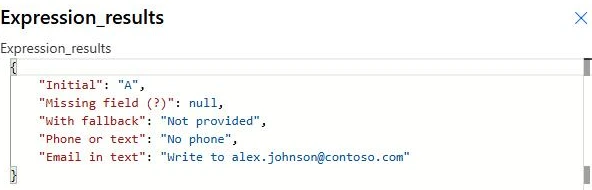
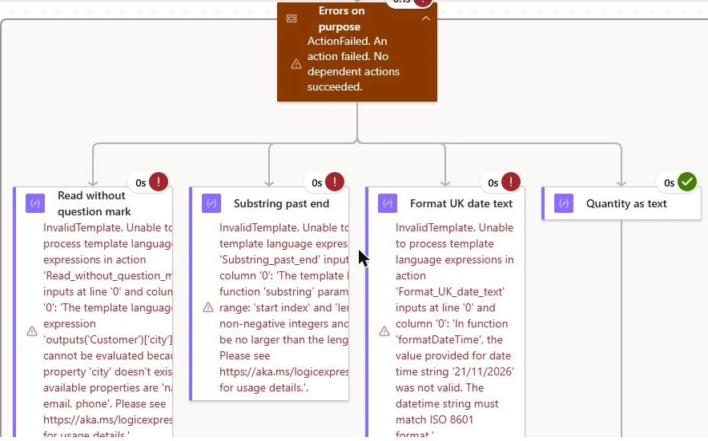
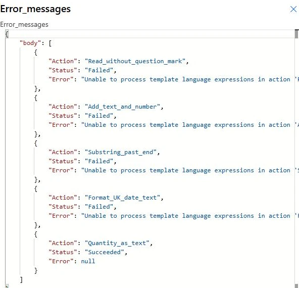

- Power Automate
- Level 1 · Foundations · 3 of 7
Dynamic content and expressions: the complete guide
Every action needs values. Each value comes from one of two places: an earlier step's output (dynamic content), or a formula that works out something new (an expression). This guide follows one demo customer record through both, from picking a field to guarding against missing data.
| Section | You'll learn |
|---|---|
| 1 · Dynamic content or expression | Which to use, with a decision diagram |
| 2 · How expressions point at steps | triggerBody, outputs, body, variables, items |
| 3 · Reading a formula inside out | A nested formula, traced step by step |
4 · Missing fields: ?, coalesce, if(empty()) | The demo's results, and the real error without ? |
| 5 · Text with values inside | @{…} interpolation vs concat |
| 6 · Debugging | Splitting a formula, reading the error message |
1 · Dynamic content or expression?
{name: alex, email: alex.johnson@contoso.com, phone: null} with no city field.Which one do I need?
? and a fallback
Watch out
- A formula typed straight into a box without fx is saved as plain text and never runs.
- Dynamic content that comes from a list (e.g. Get items) silently adds an Apply to each around your action.
2 · How expressions point at other steps
An expression can't see the canvas. It finds earlier values with a few workflow functions, using the action's name with spaces replaced by underscores.
| Function | Returns | Demo example | Value |
|---|---|---|---|
triggerBody()?['text'] | An input typed when the flow starts | a manual trigger's text input | "alex" |
outputs('Customer') | The whole result of a Compose or built-in action | the customer record | {…} |
body('Get_item') | Just the response body of a connector action | a SharePoint item | the item's fields |
variables('Counter') | A variable's current value | after the loop | 3 |
items('Apply_to_each') | The current item inside a named loop | item() for the innermost loop | "A-101" |
Renaming breaks references
outputs('Customer')3 · Reading a formula: inside out
toUpper(substring(outputs('Customer')?['name'], 0, 1))
outputs('Customer')?['name'] → "alex"substring(…, 0, 1): 1 character from position 0 → "a"toUpper(…) → "A"toUpper(substring(outputs('Customer')?['name'], 0, 1))| Piece | What it does |
|---|---|
outputs('Customer') | The Compose result: the whole record. |
?['name'] | One field from it. ? means “null if missing” instead of failing. |
substring(text, 0, 1) | Start at position 0 (the first character), take 1. |
toUpper(...) | Upper case. |
4 · Missing and empty fields
?['field'] returns null when a field doesn't exist; coalesce and if(empty()) swap null for something useful.The Expressions scope, step by step
| Action | Expression | Result |
|---|---|---|
| Initial | toUpper(substring(outputs('Customer')?['name'], 0, 1)) | "A" |
| Missing field | outputs('Customer')?['city'] | null |
| With fallback | coalesce(outputs('Customer')?['city'], 'Not provided') | "Not provided" |
| Phone or text | if(empty(outputs('Customer')?['phone']), 'No phone', …) | "No phone" |
| Read without ? | outputs('Customer')['city'] | fails |

The same read without the question mark fails, and the run tells you exactly why:
The template language expression 'outputs('Customer')['city']' cannot be evaluated
because property 'city' doesn't exist, available properties are 'name, email, phone'.| Function | Returns | Use it when |
|---|---|---|
x?['field'] | The field, or null if it's missing | Any field that might not be there |
coalesce(a, b, …) | The first value that isn't null | A default for a missing value |
empty(x) | true for null, '', [] or {} | Null and empty text should be treated the same |
if(test, a, b) | a when test is true, otherwise b | Two different results |
equals(x, null) | true only for null | Empty text should count as a value |
Watch out
coalescedoes not replace empty text'', only null. Useif(empty(…))when blanks matter.?protects one level.a?['b']?['c']needs it at every level that might be missing.
5 · Putting values inside text
Two ways to build the same sentence
Write to @{outputs('Customer')?['email']}concat('Write to ', outputs('Customer')?['email'])Interpolation is easier to read for sentences and email bodies. concat is better when the result feeds another function. Interpolation always produces text: a number or object placed with @{…} becomes a string.
6 · When a formula fails


result('Errors_on_purpose') collects every action's status and error message in one place, a pattern you'll reuse for error alerts.Debugging a long expression
| Error message says | Usually means | Fix |
|---|---|---|
| property 'x' doesn't exist | A missing field read without ? | ?['x'] and a fallback |
| expects … integer … provided value is of type 'String' | A number arrived as text | int() / float() (see Data types) |
| parameters are out of range | substring past the end | slice or check length (see Text functions) |
| Unable to process template language expressions | The start of every expression error | Read the sentence after it |
New to this? Start from the basics optional
Function: a named operation with inputs in brackets: length('abc') returns 3.
Argument: one input to a function, separated by commas.
Null: no value at all; different from empty text.
Build it step by step optional
- Add a Compose Customer with the record above.
- Add Compose actions for Initial, Missing field and With fallback using the expressions in section 4.
- Add one more with
outputs('Customer')['city'], without the?. - Run it: the first three succeed, the last fails with the doesn't exist message.
Common mistakes
- Renaming an action after formulas refer to it.
outputs()vsbody()mixed up for connector actions.- No
?on optional fields. - Positions counted from 1 instead of 0.